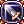
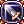

MDEF
MDEF reduces the magical damage that you get from any magical damage source.
In Renewal it was completely reworked to be a complement of the character instead of a key stat that nullifies magical damage possible to reach 100% through gear.
It's made of two parts, SOFT MDEF and HARD MDEF, and both are, respectively, seen on your character stats menu in that exact order.
HARD MDEF can also be bypassed, up to 100%, depending on the gear and/or buffs used by the player.
Soft MDEF
SOFT MDEF, as the name says, it's a soft reduction that comes from stats and base level.
It's a final reduction of damage based on the value you see on your stats menu. This means that 200 SOFT MDEF in ALT+A reduces 200 of the damage that you receive.
Both monsters and players have it and the formula for it is based on the following:
Formula for Players:
Soft MDEF = Floor[(Total INT)+(Total VIT/5)+(Total DEX/5)+(Base Level/4)]
Formula for Monsters:
Soft MDEF = [Floor(Base Level/4)+Floor(INT/4)]
Hard MDEF
HARD MDEF, as the name says, is a hard reduction of damage. Any MDEF that comes from items is considered HARD MDEF even if it only says MDEF.
It's a reduction based on the gear you got equipped and, due to the way it works and not being the easiest thing to mix with any build, you either go for 100 to be immune to frozen and stone curse or ignore. Some exceptions do exist, such as  Adamantine Lv. 5 from Bio5 Headgears, since they provide a good amount of HARD MDEF with a minimal loss of damage in some builds.
Adamantine Lv. 5 from Bio5 Headgears, since they provide a good amount of HARD MDEF with a minimal loss of damage in some builds.
Formula for % of Damage Reduced:
% of Damage Reduced = (1-[(1000+Hard MDEF)/(1000+Hard MDEF*10)])*100
This means that 100 HARD MDEF reduces damage by 45%, 50 HARD MDEF will reduce physical damage by 30%, and so on.
Since its scale is also not linear, the more you add, the more trouble you will have to increase it.
Be aware that it's technically impossible to reach 100% of damage reduction through HARD MDEF so it's not a great stat to invest a lot into even if more means less damage received.
Some skills also, such as Symphony of Lover or  Nyang Grass, reduce or increase its value.
Nyang Grass, reduce or increase its value.
Bypass % of MDEF
Bypass % of MDEF (also known as ignore/pierce MDEF) is an effect related to HARD MDEF even if only says MDEF is all cases.
Any type of it stacks with itself unless stated otherwise. It also caps at 100%.
SOFT DEF still applies at the end unless stated otherwise.
Examples
- A player with a weapon from Einbench Dungeon 3 with the enchant Ignore magic defense of Demon race enemies 25%, a
 Purified Knight's Shield that has the effect of 60% bypass MDEF vs Normal Monsters, and  Expiatio Lv 5 (25% vs all types of enemies) will provide a max bypass of 100% HARD MDEF where applicable.
Purified Knight's Shield that has the effect of 60% bypass MDEF vs Normal Monsters, and  Expiatio Lv 5 (25% vs all types of enemies) will provide a max bypass of 100% HARD MDEF where applicable.
- 25 + 60 + 25 = 110 => caps at 100 % bypass MDEF vs Demon monsters that are also Normal Monsters
- 25 + 0 + 25 = 50 % bypass MDEF vs Demon monsters that are also Boss Monsters
- 0 + 60 + 25 = 85 % bypass MDEF vs Normal Monsters
- 0 + 0 + 25 = 25 % bypass MDEF vs Boss Monsters
- Inside Monster Hunter, a player with a Purified Knight's Shield that has the effect of 60% bypass MDEF vs Boss (60% vs Great Monsters), +10
 Tempest Shadow Focus (20% vs Great Monsters), and +10
Tempest Shadow Focus (20% vs Great Monsters), and +10  Tempest Shadow Brooch (20% vs Great Monsters) will have a total bypass of 100% HARD DEF.
Tempest Shadow Brooch (20% vs Great Monsters) will have a total bypass of 100% HARD DEF.
- 60 + 20 + 20 = 100 % Bypass DEF vs Great Monsters
Formula to know the remaining HARD MDEF left:
MDEF left = HARD MDEF*[1-(% MDEF BYPASSED/100)]